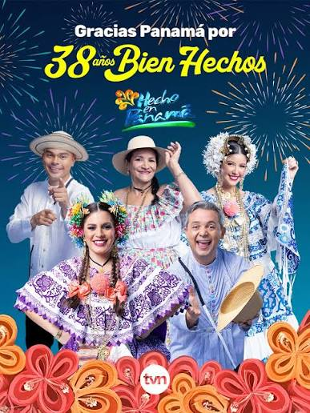
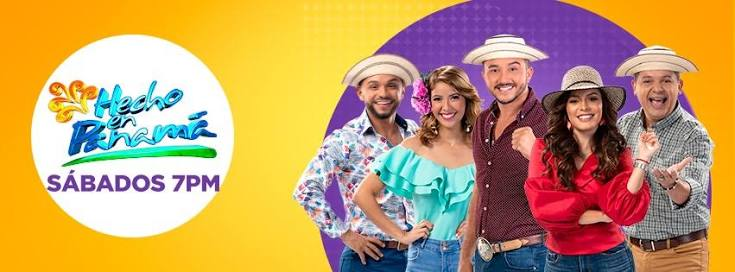
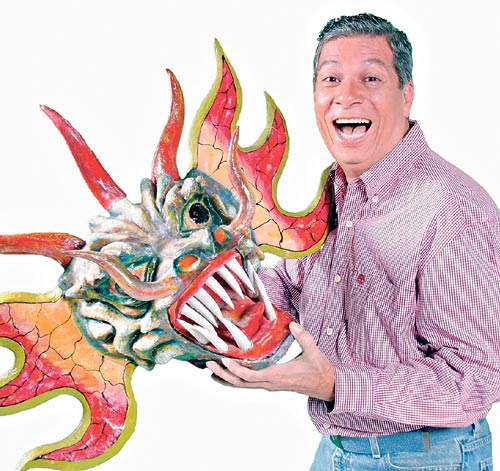

Programa de television panameña que resalta la cultura
historia del programa
Hecho en Panamá es un programa de televisión panameño de temática folclórica que nació en los años 80, con sus primeras transmisiones en 1987 a través del Canal 11, dedicado a difundir la música típica y las tradiciones del país. Desde sus inicios, el programa recorría distintos rincones de Panamá para transmitir en vivo eventos folclóricos y presentar a artistas emblemáticos de la música nacional. En 1990 el espacio dio el salto a TVN Canal 2, donde comenzó a transmitirse los sábados, formato que mantiene hasta la actualidad. A lo largo de las décadas siguientes, el elenco fue creciendo y renovándose: en 1998 se sumó Mirta Rodríguez, en 1999 Kendal Royo, en los años 2000 se incorporaron Luis Pérez y Karen Peralta, y ya en la década de 2010 se unieron Israel Berastegui y, en 2016, Elvia Muñoz. Con casi cuatro décadas al aire, "Hecho en Panamá" se ha consolidado como un espacio televisivo dedicado a resaltar el folklore, las tradiciones, la gastronomía y la identidad cultural panameña.

Presentadores del programa
Hecho en Panamá, el reconocido programa folclórico de TVN Canal 2, es conducido actualmente por un talentoso equipo que mantiene viva la esencia cultural panameña. Israel Berastegui y Kendall Royo hijo aportan su experiencia y conocimiento de las tradiciones nacionales, mientras que Gisselle Ow Young y Elvia Muñoz complementan el elenco, cada sábado, llevando a los hogares panameños lo mejor del folklore, la música típica y la identidad de nuestro país.

Creador

Óscar Poveda
Óscar Poveda es reconocido como el creador de "Hecho en Panamá", programa que ideó en los años 80 con el propósito de rescatar y difundir la música típica y las tradiciones folclóricas del país. En 1987 dio vida al proyecto en el Canal 11, presentando a artistas como Osvaldo Ayala y Dorindo Cárdenas, y recorriendo distintas regiones de Panamá para transmitir en vivo festividades y eventos populares. Gracias a su visión, el programa logró trasladarse a TVN en 1990, sentando las bases de lo que hoy, casi cuatro décadas después, sigue siendo un referente de la cultura panameña en televisión.